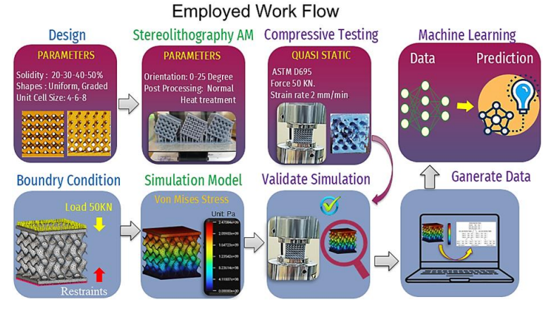
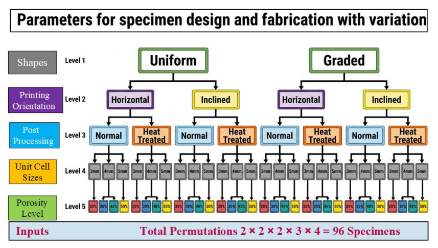
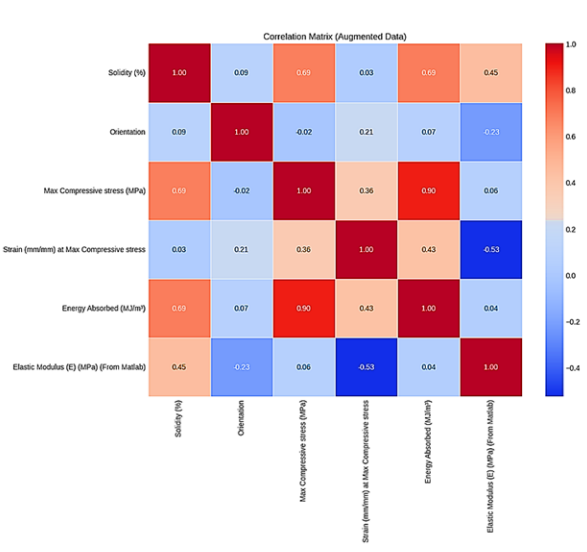

Predictive Modeling for Additively Manufactured Gyroid Lattices
Data Science & Research Internship
Guide: Dr. Praveen Bidare, Sheffield Hallam University

Project Overview
The optimization of 3D printed lattice structures involves highly nonlinear interactions between various geometric and post-processing parameters. Traditional trial-and-error experimental approaches are impractical for such high-dimensional design spaces. In this research, I developed a robust, data-driven machine learning framework to predict performance metrics and bypass computational bottlenecks, establishing a direct mapping between complex geometric parameters and target outcomes.
Technical Implementation
To capture the complex multiphysics interactions effectively, the modeling framework utilized an ensemble of Deep Learning and Machine Learning strategies tailored to specific variance profiles:
- Deep Artificial Neural Networks (ANN): Engineered a feed-forward ANN using TensorFlow to map high-variance properties. For energy absorption predictions, I designed a deeper 3-layer architecture (256, 128, 64 neurons) utilizing the 'Swish' activation function and Batch Normalization to stabilize the learning process and capture peak values in the energy landscape. L2 regularization and Dropout layers (rate=0.3) were implemented to prevent overfitting.
- Physics-Informed Feature Engineering: Rather than treating inputs purely statistically, I derived new predictive terms directly from constituent mechanics (e.g., Stress-Strain Ratio and Inverse Solidity). This embedded physical constraints into the Gradient Boosting Regressor, giving it a "mechanical head start" to capture non-linear behaviors.
- Data Augmentation & Robust Validation: Addressed experimental sample size limits by injecting Gaussian noise (σ=0.03) into the training manifold, doubling the dataset for Gradient Boosting and acting as a continuous regularizer. Additionally, a Leave-One-Out Cross-Validation (LOOCV) protocol was utilized for Support Vector Regression (SVR) to maximize data utility and model generalizability.


System Output & Features
The deployed machine learning models demonstrated exceptional predictive fidelity across all targeted metrics. The optimized ANN model utilizing Swish activation achieved a coefficient of determination (R²) of 0.9616 for energy absorption and 0.9374 for compressive stress. Furthermore, the physics-informed Gradient Boosting and SVR models reliably predicted stiffness properties (R² = 0.8509 and 0.8257, respectively). This framework successfully proves that data-driven optimization can reliably replace extensive physical testing in additive manufacturing.